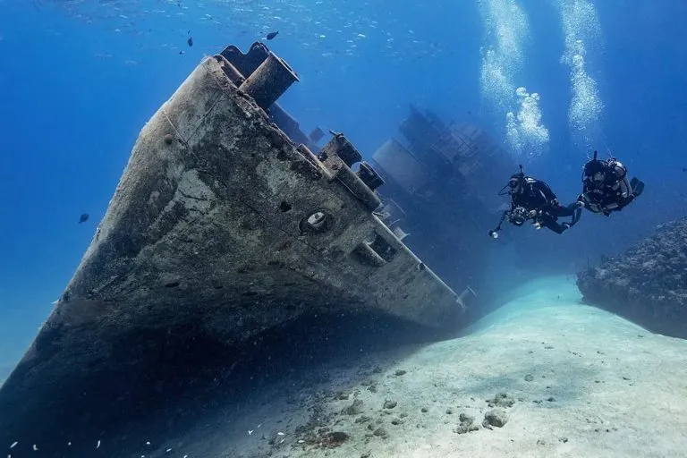

ABOUT CORON BAY WRECKS
Coron Bay, located in northern Palawan, Philippines, is home to some of the most famous shipwreck dive sites in the world. The bay features several Japanese vessels sunk during World War II, resting at various depths that attract divers of all experience levels.
These wrecks, ranging from shallow accessible ships to deep exploratory dives, are teeming with vibrant marine life and coral formations. Divers can explore sunken cargo ships, patrol boats, and even small gunboats, each providing a unique underwater adventure. Coron Bay's wrecks have become iconic, offering both a historical glimpse into the past and an unforgettable diving experience surrounded by crystal-clear waters and abundant tropical fish.